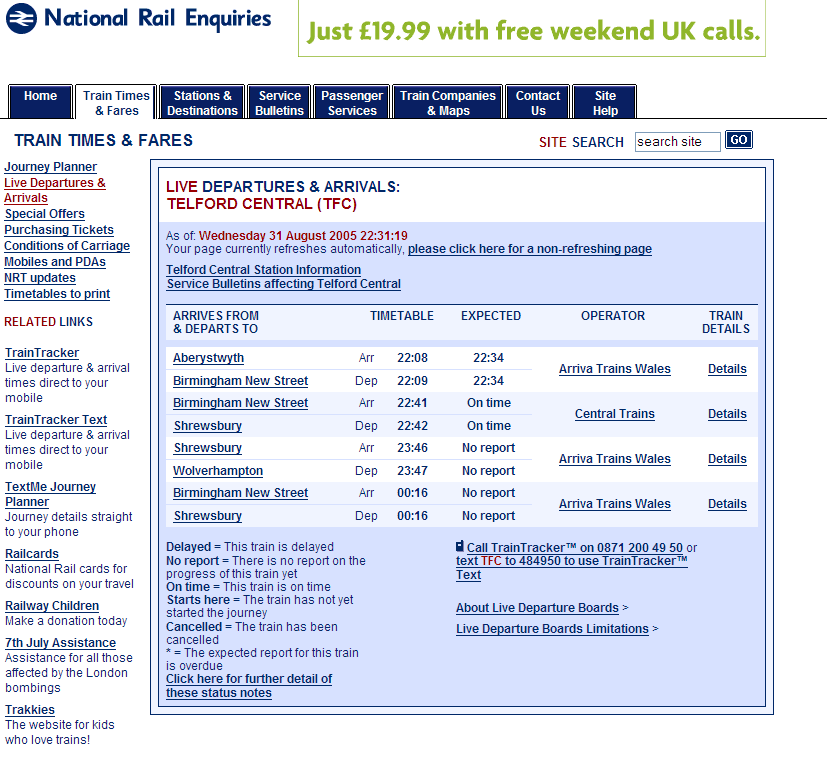
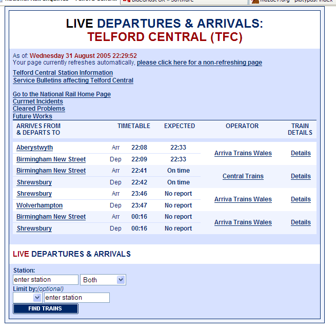

Install: Right Click here and select "Install User Script"
The aim of this script is to try to clean up the national rail livedeparture boards
The site was recently updated, and the old simple live departure board pages are gone. They are now clogged up with adverts, menus etc.
It was inspired by the discussion on uk.railway
Although my other greasemonkey scripts were developed by hand, this one was done using the platypus extension, and thus requires it: http://platypus.mozdev.org/
The script removes the main site except the live departure board data. It adds the following links:
And adds the live departure board search box to the bottom of the page (defaulted to Both arrivals and departures)
The title is also made bigger. It works on pages under http://www.livedepartureboards.co.uk/ldb/* and thus won't affect the rest of the national rail website
GreaseMonkey is an extension for Mozilla Firefox.
I Found Dive Into Greasemonkey very useful in learning how to make Greasemonkey scripts.
Before

and after

Any Comments then email me @ 
Install: Right Click here and select "Install User Script"
-----------------------------
Version 0.1
----------------------------
31 August 2005
-----------------------------
Initial release